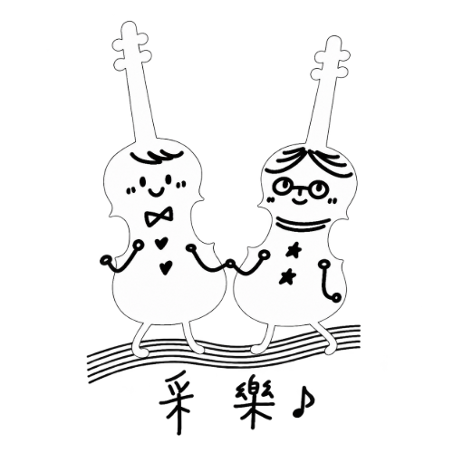
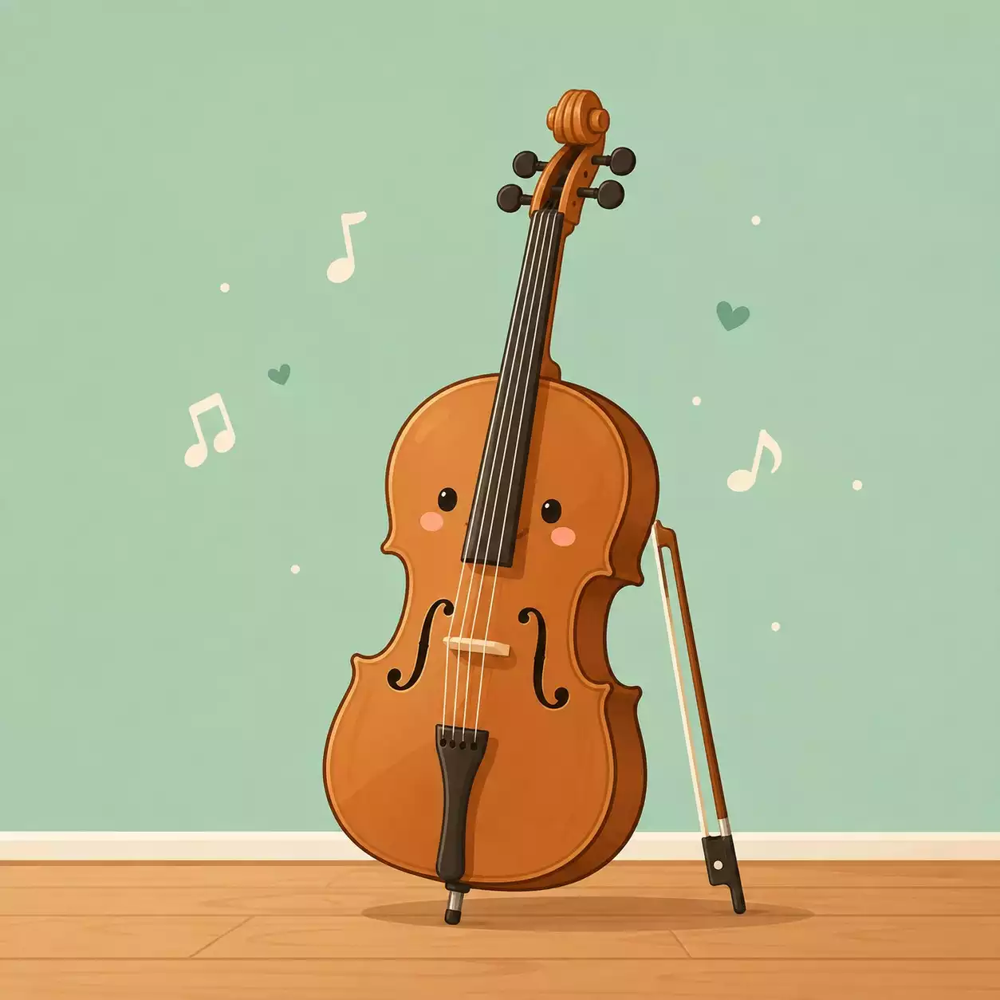
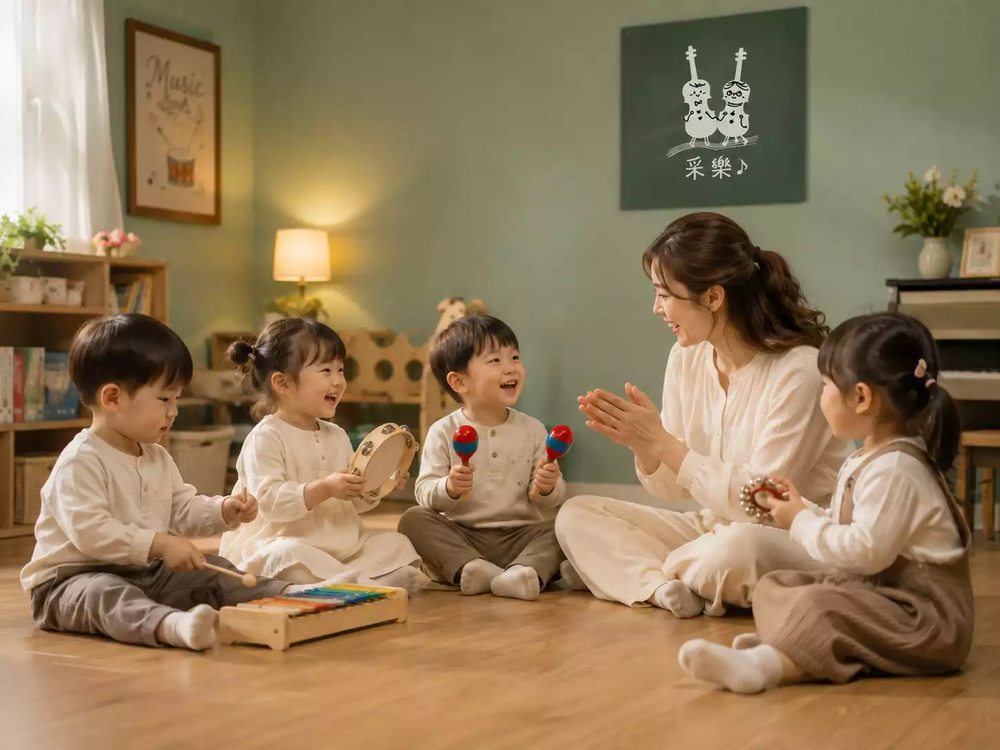
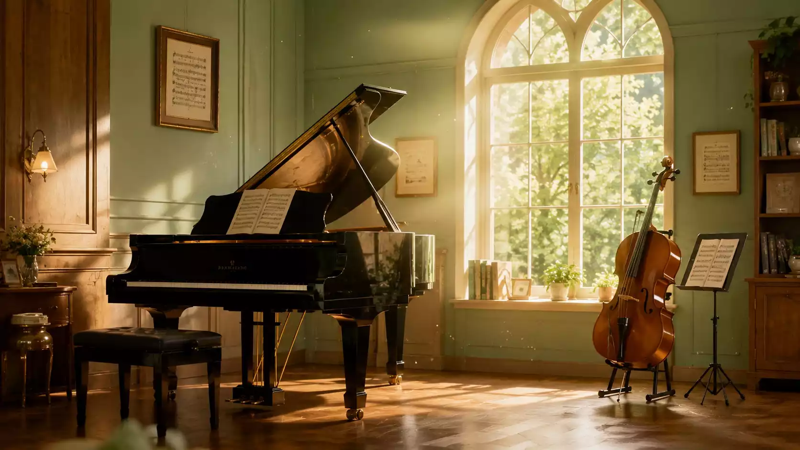

從硬體到教學，充滿溫度的學習環境

體貼學生與家長，教室備有各尺寸大提琴，來上課不用再辛苦揹著笨重的樂器囉！
全面安裝 BenQ 智能鋼琴護眼燈，並每年通過消防安全檢測，給孩子最安心的環境。
不定期舉辦年度師生音樂會與大合奏，讓大朋友小朋友都能在舞台上建立自信！
超過十年教學經驗，帶領孩子愛上音樂
由 Teacher Irene 全新策劃的創意音樂律動課程！

無論是小朋友啟蒙，或是成人下班後的圓夢計畫，采樂都歡迎您！
